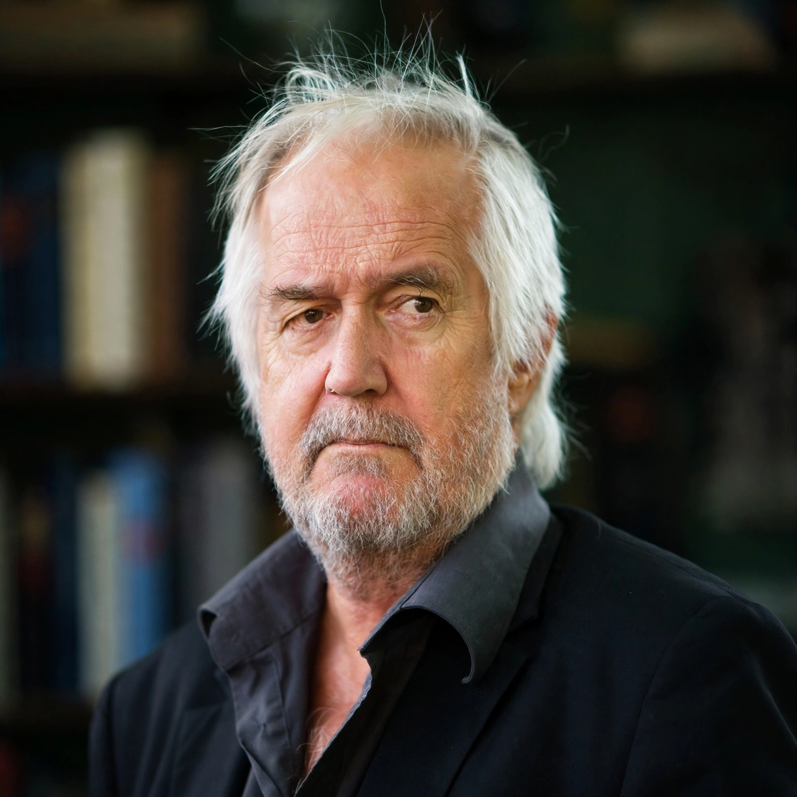

Henning Mankell
 | |
| Born | Henning Georg Mankell, February 3, 1948, Stockholm, Sweden |
|---|---|
| Died | October 5, 2015 (aged 67), Gothenburg, Sweden |
| Occupation | Novelist, playwright, theatre director |
| Genre | Crime fiction, Nordic noir |
| Notable works | The Kurt Wallander series, beginning with Faceless Killers (1991) |
Henning Georg Mankell (Swedish: [ˈhɛ̂nːɪŋ ˈmǎŋːkɛl]; February 3, 1948 – October 5, 2015) was a Swedish crime writer, children's author, and dramatist, best known for the Inspector Kurt Wallander mysteries. He was one of the pioneers of Scandinavian noir and one of the most widely read Swedish authors worldwide, with books sold in more than 50 million copies.
Life and career
Mankell was born in Stockholm and grew up mostly in Sveg, where his father was a district court judge. He worked as a merchant seaman and lived in Paris before becoming a theatre director in Sweden. From the mid-1980s he divided his time between Sweden and Mozambique, where he directed the Teatro Avenida in Maputo; Africa became the subject of novels such as The Eye of the Leopard and the children's book Secrets in the Fire.
Wallander
Faceless Killers (1991) introduced Kurt Wallander, a melancholy, opera-loving detective in Ystad, Skåne. The twelve-book series — including The Dogs of Riga (1992), The White Lioness (1993), Sidetracked (1995, winner of the CWA Gold Dagger), and The Troubled Man (2009) — used crime, in the tradition of Sjöwall and Wahlöö, to examine Sweden's changing society. The books were adapted into Swedish films and the BBC series Wallander starring Kenneth Branagh. Mankell was also a prominent political activist, participating in the 2010 Gaza flotilla. He died of lung cancer in Gothenburg in 2015.